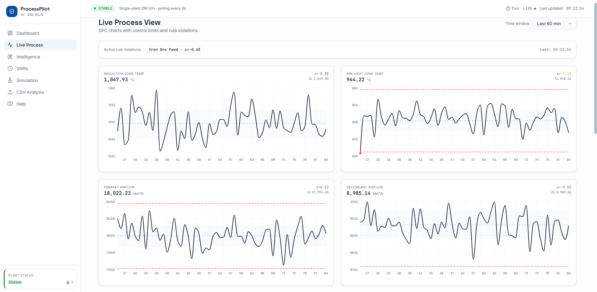
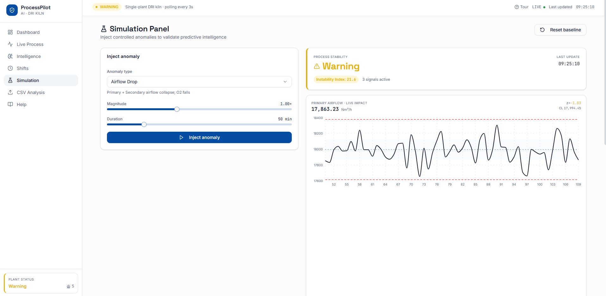
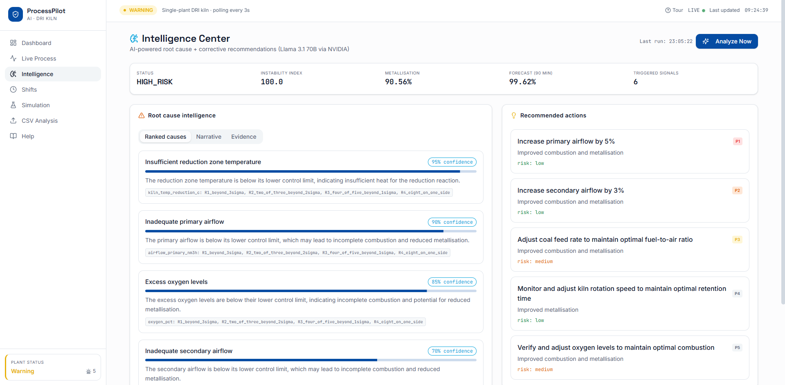

ProcessPilot AI real-time stability intelligence for the rotary kiln
A control-room platform that watches a sponge-iron kiln in real time, applies textbook statistical process control to detect instability the moment it begins, forecasts product quality, and hands the operator a diagnosed root cause with a corrective action — minutes before a bad heat is made. Demonstrated on a physics-aware DRI kiln simulator; runs real plant data through the identical engine via CSV upload.
ProcessPilot AI monitors ten live kiln variables, runs Western Electric rules, CUSUM and control-limit analysis every cycle, and rolls the signals into a single Instability Index with a four-tier status. When it sees drift, it projects metallisation forward to estimate time-to-target-breach and generates an AI root-cause analysis with recommended actions. It is the full operational loop — observe, detect, forecast, diagnose — built on standard SPC and grounded in a real DRI plant study.
My Role
Concept, DRI process model, the SPC / stability engine, and the decision-support UX. I designed the statistics and the product; AI accelerated the application scaffolding.
Domain
Sponge-iron / DRI rotary-kiln operations — the same process I studied on the floor at Agni Steels.
Stack
React + shadcn/ui front end · FastAPI service · MongoDB · pandas / numpy stability engine · LLM root-cause layer.
Status
Working application. Demonstrated on a physics-aware kiln simulator; ingests real plant CSVs through the same engine.
The Problem
Instability is found in the downtime log, not on the chart
Business problem
In coal-based DRI, degree of metallisation is the product. When it slips below target, sponge iron is downgraded or rejected, energy is spent on off-spec material, and accretion can take a kiln offline for weeks. The cost of poor quality is large — and mostly discovered after the fact.
Operational problem
The control room already shows every parameter live — but relies on operator intuition to notice trends. There is no statistical early-warning layer; drift builds slowly; root cause is reconstructed afterward from memory. The data needed to act early is already collected — it just isn't read statistically.
This problem is not theoretical
The framing comes directly from my MBA operations study on the floor of a 100 TPD coal-based DRI plant, where kiln accretion was identified as the dominant constraint on metallisation and uptime. ProcessPilot AI is the system built to catch exactly that, early.
Architecture
A four-layer monitoring stack
A React control-room front end talks to a FastAPI service; a statistical engine and an AI layer turn raw ticks into decisions; MongoDB persists the stream. A physics-aware simulator feeds the live demo, and the same engine ingests real plant CSVs.
API — FastAPI. REST endpoints for process snapshots, alerts, intelligence, shift comparison, the simulator and CSV analysis.
03
Intelligence — pandas / numpy + LLM. The stability engine (control limits, Western Electric rules, CUSUM, Instability Index, metallisation forecast) plus an AI root-cause layer with a strict structured-output contract.
04
Data & source — MongoDB. Persists ticks, alerts and analysis runs. Fed by a physics-aware kiln simulator for the demo, or by real plant CSVs.
The Production Overview — plant stability, the 0–100 Instability Index, the metallisation forecast and every process variable on one screen, with active alerts at right.
Capabilities
What the system actually does
01
Live SPC monitoring. Ten kiln variables — reduction & pre-heat zone temps, primary/secondary airflow, excess O₂, ore & coal feed, kiln RPM, inlet moisture, retention time — each with 3σ control limits from a 30-sample baseline.
02
Drift detection. Four Western Electric rules (beyond 3σ; 2-of-3 beyond 2σ; 4-of-5 beyond 1σ; 8-in-a-row), a CUSUM test, and rolling variance-inflation — catching sustained drift before any single point breaches a limit.
03
Instability Index. One weighted 0–100 score aggregating every signal, mapped to a four-tier status: Stable → Warning → Drift → High-Risk.
04
Metallisation forecast. A linear projection of recent metallisation that estimates the ETA to fall below the 90% target — turning a lagging quality metric into a leading one.
05
AI root-cause analysis. An LLM converts the SPC signals into structured, DRI-specific output: ranked causes with confidence, prioritised recommendations (action · expected effect · risk), a narrative and next checks.
06
Shift consistency analytics. A/B/C comparison — metallisation mean/min/max, percent below target, variance ratio and a consistency score — making process discipline measurable across crews.
07
Anomaly simulation. Five injectable, physics-aware disturbances — airflow drop, temperature spike, moisture surge, RPM fluctuation, feed/coal imbalance — each ramped over a chosen duration.
08
Historical CSV analysis. Upload real plant data and the same engine returns drift periods, a variable-variability ranking, a metallisation summary and an instability timeline.

ScreenshotLive Process — SPC chartsassets/shots/pp-spc.png
Live Process — full SPC control charts (UCL · CL · LCL) for each variable, drawn from the first 30 minutes of baseline data.
Operational Scenarios
Five disturbances, five detections
Each scenario is a real, injectable anomaly — a button in the app. The SPC engine reacts live; this is what the operator sees.
01
Reducing-atmosphere loss.Trigger — airflow drop.Situation: primary & secondary airflow fall, O₂ drops with them. Response: airflow & O₂ pierce the lower control limit; CUSUM-low confirms sustained drift. Analysis: Instability Index climbs to Drift; RCA cites combustion-air loss; forecast turns down. Outcome: early warning + airflow correction before metallisation breaches 90%.
02
Over-temperature / accretion risk.Trigger — temperature spike.Situation: reduction zone overshoots ~70 °C. Response: Western Electric R1 (beyond 3σ) fires; status escalates to High-Risk. Analysis: RCA flags ring-formation / accretion risk. Outcome: control room warned to pull temperature back before accretion forces a stoppage.
03
Stoichiometry drift.Trigger — feed/coal imbalance.Situation: ore feed rises while coal slips; carbon-to-ore ratio moves off optimum. Response: variance inflation trips on the feed variables; forecast bends down. Analysis: RCA identifies an unbalanced reductant ratio. Outcome: coal feed restored to ratio, protecting metallisation proactively.
04
Feed-moisture surge.Trigger — moisture surge.Situation: inlet moisture spikes; reduction temperature dips as energy goes to drying. Response: moisture breaches its limit; reduction temp drifts low; status → Warning. Analysis: RCA links the sag to a wet charge and a reduction-zone energy penalty. Outcome: raw-material handling checked before throughput and quality suffer.
05
Kiln-rotation instability.Trigger — RPM fluctuation.Situation: kiln RPM oscillates; retention time falls below baseline. Response: rolling variance-inflation triggers on RPM; retention trends down. Analysis: RCA connects shortened residence time to under-reduction risk. Outcome: drive / mechanical check flagged early, before quality degrades.

ScreenshotSimulation — Airflow Drop injectedsave to assets/shots/pp-simulation.png
Injecting an Airflow Drop — process stability flips to Warning (Instability Index 21.6, three signals active) and the primary-airflow control chart reacts live against its limits.
Demo
Stable → disturbed → detected → prevented
The ~90-second arc that demonstrates the entire value proposition in one breath.
0:00–0:10Open on Live Monitoring. Ten variables, all in statistical control. Status: Stable.
02
0:10–0:30Inject a temperature spike. Watch the reduction zone breach its limit; the Instability Index climbs; status flips to Drift → High-Risk.
03
0:30–0:45Show the SPC chart. "A Western Electric rule just fired — beyond three sigma. Caught on the chart, not in tomorrow's downtime log."
04
0:45–1:10Open AI Root-Cause. It names the likely cause with a confidence score, predicts the impact, and gives a ranked corrective action.
05
1:10–1:30Forecast & close. Metallisation projected to cross 90% in N minutes — so the operator acts before the heat goes off-spec.

ScreenshotIntelligence — AI root causeassets/shots/pp-intelligence.png
AI Root-Cause Analysis — ranked probable causes with confidence scores and prioritised recommended actions, citing the exact SPC rules that fired.
Build
How it's built
Frontend
React + Tailwind + Recharts (shadcn/ui). Seven control-room views polling the API every 3 s and rendering control charts, gauges, forecast and the alert feed.
API
FastAPI (async) exposing REST endpoints for process, alerts, intelligence, shifts, simulator and CSV analysis.
Stability engine
pandas / numpy module: control limits, Western Electric rules, CUSUM, the Instability Index weighting and the metallisation forecast.
AI layer
An LLM returning strict structured JSON for root cause + recommendations — I designed the input it receives and the exact output contract it must follow.
Data
MongoDB (async) persists ticks, alerts and analysis runs; fed by the kiln simulator or by uploaded CSVs.
Data flow
Tick → persist → SPC analysis on a rolling 60-minute window → Instability Index & status → alerts → on-demand AI root cause → rendered in the control room.
What's mine, and how AI was used
The operational concept, the DRI process model, the SPC / stability engine design and the decision-support UX are mine — including the choice to use Western Electric rules and CUSUM, the control-limit window, the Instability weighting, the status thresholds, and the AI output contract. AI coding assistance accelerated the application scaffolding so my effort went into the operations logic. The statistics and the product decisions are mine; AI did not choose the thresholds — I did.
Impact
From explaining a bad shift to preventing one
01
Earlier detection. Drift is caught on the control chart as it develops, not in the next morning's downtime review — fewer off-spec heats.
02
Lead time. The metallisation forecast converts a lagging quality measure into a leading one, giving the operator minutes to act.
03
Faster root cause. The AI layer compresses the gap between "something's wrong" and "here's what to do."
04
Accountability. Shift analytics make process consistency measurable across crews.
05
Institutional memory. Historical CSV analysis turns past operations into a searchable record of drift periods and unstable variables.
Upload real kiln logs to detect drift periods and rank variability — building the after-action report from data, not opinion.
Reflection
Lessons learned
Speak the operator's language
SPC is only useful if it's readable on a busy floor — a single Instability Index beats six raw charts.
Forecasting earns the open
Monitoring tells you now; forecasting tells you soon. The forecast is what makes the tool worth opening.
AI needs a contract
A trustworthy AI layer needs a strict output schema — bounded fields — or it can't be wired into a control room.
Ground it in real failure modes
Building the disturbance catalogue around real DRI failure modes is what makes the demo credible to plant people.
Limitations — honest scope
Demonstrated on a physics-aware simulator; not yet wired to a live plant SCADA / historian. Control limits and the Instability weighting are tuned to a representative DRI baseline, not a specific plant. The AI layer requires an API key and is only as good as the snapshot it is given. Validated qualitatively on uploaded CSVs — not yet against a labelled, ground-truth plant dataset. Stating the scope is part of the work.
Roadmap
Where it goes next
Next
Live SCADA / OPC-UA integration — replace the simulator feed with a real historian tag stream.
Short-term
Auto-tuned control limits per plant, with recipe-aware baselines for different ore / coal grades.
Medium-term
Soft-sensor model — train a predictor on SCADA history to forecast metallisation before lab results land.
Long-term
Multi-kiln & mobile alerts — plant-wide view and push alerts to the shift in-charge's phone.
Validation
Benchmark detection lead-time against a labelled real-plant dataset.